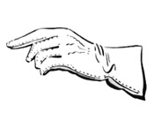
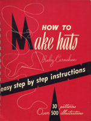

1950-1959
1950
How to Make Gloves, by Eunice Close
With diagrams and photographs illustrating the methods of making gloves in the home. (92 pages)
Typos for this work
1952
How to Make Hats, by Ruby Carnahan
Detailed instructions on how to make hats, including equipment needed, stitches and materials used, how to take measurements, and making various frames and covering them. Many line drawings and patterns (not just for hats, but also for complementary hand and shoulder bags). (153 pages)
Check the candidates' page to see what else will eventually be available.